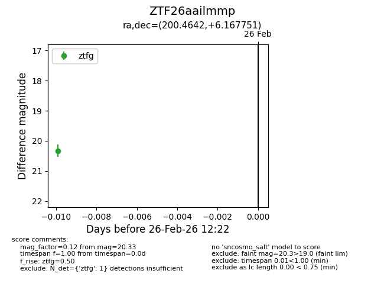
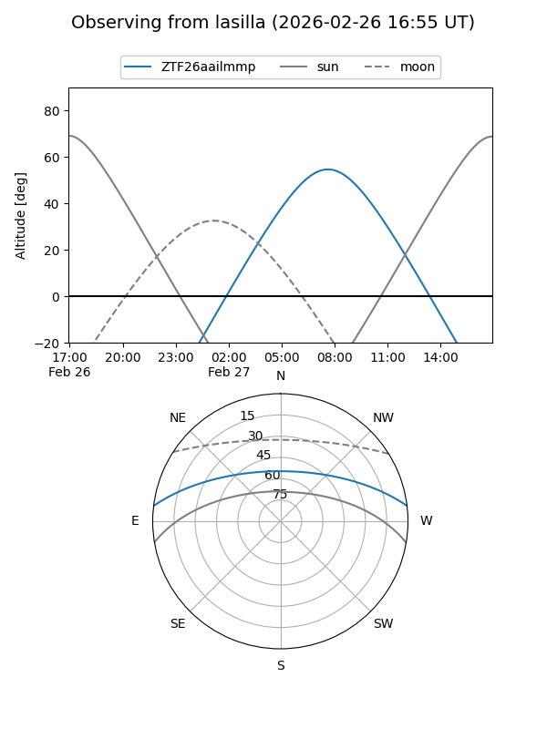
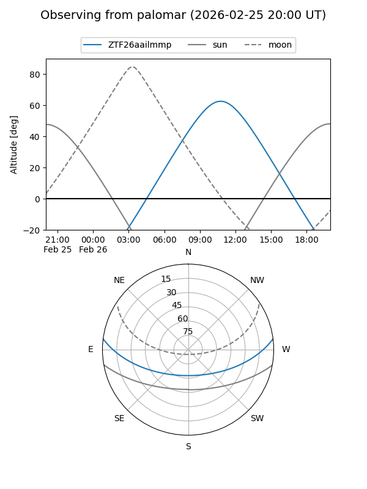

ZTF26aailmmp
Target ZTF26aailmmp at 2026-02-26 12:23
Aliases and brokers:
FINK: link
Lasair: link
ALeRCE: link
alt names
ZTF26aailmmp (ztf,fink_ztf)
Coordinates:
equatorial (ra, dec) = 200.4642,+6.16775
equatorial (HMS+DMS) = 13:21:51.40,+06:10:03.90
galactic (l, b) = (323.3344,+67.82645)
Flags:
Photometry:
last ztfg=20.33
1 ztfg detections
Lightcurve

Visibility


Additional plots